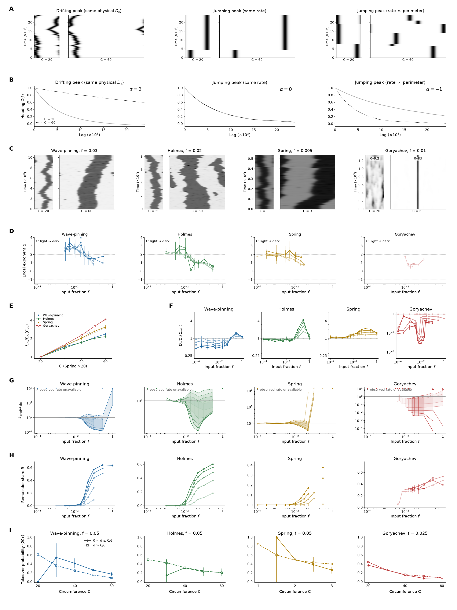

(1)
(1)Generated 2026-10-23T21:44:31.657892+00:00. Document producer finished. Simulation and analysis status are recorded with each figure; this page updates when rebuilt and has no timed refresh.
Integrated manuscript outline · Figures 1–4 with legends · Archived brief · Task prompt
This is an immutable review candidate with the targeted mode campaign still active. Latest Figure 4 producer output and status.
Figure and legend · Complete supplement · Results and methods

A, Recorded Wave-pinning preparation cue at length 15: a finite left patch, withdrawn at 0.773 native time units. White to black is zero to peak input; coloured vertical lines mark the profile samples in B.
B, Native active profiles from the same preparation, scaled using the common minimum and span of the displayed snapshots. Colours identify recorded times, with no new simulation.
C, Orientation from the same preparation. Grey marks basal verification after establishment arrival at about 116; the cue has already ended. The matched time scale in A and C separates input duration from autonomous development.
D, Three rightward finite challenges restart the identical qualifying nominal-amplitude, relative-20% basal checkpoint at each model and length: fixed physical support 3 (Spring 0.2 native length units), relative support 20%, and a linear ramp with constant physical slope. Patch peaks remain fixed within each model; a fixed-slope ramp has a larger peak in a longer domain. Goryachev patches use the independently selected, length-independent multiplier K=64 (peak 6.4), which makes this a response-permissive comparison rather than a calibrated equal biochemical dose across models.
E, Spearman rank correlation between length and the shortest tested passing pulse duration, separately for orientation replacement and strength replacement, across Wave-pinning, Goryachev, corrected deBelly, Holmes 3 and Spring. Each cell reports the correlation and included successful-length count. All audited scalar successes enter, including those failing the separate native-field tail criterion. At least four distinct successful lengths and nonconstant durations are required; censored and preparation-ineligible cases receive no invented time. The companion duration curves retain all lengths and field-status markers.
After each positive pulse, input returns to the native basal value for 10,000 native time units. Orientation requires all 201 final-500 samples to have scalar orientation above 0.05 and contrast at least 0.05, with orientation range below 0.005. Strength additionally requires every tail orientation to be within 1% of the absolute initial leftward scalar orientation; it does not compare individual pole heights or amounts. The separate native-field tail flag requires pointwise range and projected 500-unit drift within 0.1% of frozen field scales. The reported duration excludes preparation and recovery. It is the shortest passing tested duration, with sampled fail/pass boundaries refined to 1%; narrower unobserved intervals are not excluded.
deBelly uses independently commanded corrected endpoints, rather than the deprecated in-loop centered extension. Spring length and time retain native units and are not silently converted to micrometres or seconds. Model-specific axes and stimulus definitions prevent interpreting cross-model amplitudes or clocks as biologically calibrated equivalents.
Figure and legend · Complete supplement · Results and methods

Enlarged cells resist replacement through distinct initiation, cue-width and pulse-memory signatures.
A, Incumbent excess amount normalized to the model reference, across the same 97 retained states.
B, Incumbent extent normalized to the model reference, for those same states.
C, Incumbent peak normalized to the model reference, for those same states.
D, Initiation is the time from cue onset until maximum in-cue activity minus the profile minimum exceeds 10% of the model’s L19 incumbent excess peak. Area 1, width 3.8; times are normalized to L19. All six deBelly upper bounds are 0.5 native units (downward arrows); first-update sampling leaves its size dependence unresolved.
E, Replacement time (first eligible challenger share ≥ 0.75) versus length, with a line per width and rows for areas 0.5, 1 and 2. Upward triangles/arrows are lower bounds: the cue never replaced within the horizon (6,000 Wave-pinning; 10,000 Goryachev/Holmes; 2,000 deBelly; 100 Spring, native units). Broad cues rescue Holmes across all lengths; narrow-cue censoring does not establish a growing penalty. Spring native widths equal the displayed widths divided by 38.
F, Gap-1 activity kept versus pulse-2 gain as a fraction of headroom (Eq. 1). Four equal pulses, total ON 1.5 times the model-length commitment calibration; gaps 0–16 pulse durations. Holmes L31–39 uses the L27 calibration. Other models are grey; lightness indicates L. Open circles at x = 0 code activity below the existing visibility gate. At the left wall, deBelly/Spring gain on pulse 2 despite no visible activity; Goryachev never does. The deBelly L19/gap16 first-gap endpoint was checked against native fields.
G, L39 gap4 challenger-share histories, labelled kept / lost / lost then commits; shading marks cue ON. deBelly includes full recovery; others show one post-train pulse duration. Continuous raw shares include below-gate values. deBelly’s later timing and fields remain numerically sensitive (supplement).
H, Prospective biosensor histories for the same pulse train in WGD− and enlarged WGD+ cells. The three facets show delayed rises and resets; saturation with gap retention; and gap collapse followed by commitment. All curves are dimensionless schematics, exactly as in the preceding edition.
I, Prospective equal-dose width responses for the same three classes: weak width rescue, strong width rescue, and weaker width rescue. Solid grey: WGD−; dashed black: WGD+. These are unchanged schematics, not measurements. Model kinetics are unchanged.
(1)s₁ and s₂ are challenger shares at pulse ends 1 and 2; s_gap1 is the first-gap-end share. An observed endpoint below the existing visibility gate is coded as zero visible share in F; its raw value remains in the CSV.
Figure and legend · Complete supplement · Results and methods

A. Exact preceding Wave-pinning activity profiles, C=30, for a cue straddling the incumbent edge (i) or separated from it (ii). Rows are initial, half-turn, 90% turn and cue-free relaxation; the grey band is cue support, diamonds are saddles and the black tick is heading. All A data and timings are unchanged.
B. Exact preceding half-turn time against cue-edge gap for the three matched sizes, light to dark: C=30,37.8,47.6; Spring 2.5, 3.15, 3.97. Lines mark first saddle appearance; grey marks undefined heading at one or more sizes. Open upward triangles and arrows denote lower bounds. Continuous-cue data and native parameters are unchanged.
C. A weak input anywhere shifts the domain by g(x) times dose; noise is many such inputs; drift follows from g and the input covariance; nothing is fitted. Lines are the terminal displacement per dose predicted by the linearized native model for the standard Gaussian pulse centred at each arc position: SD 1.5, duration 50 (Spring 0.15, 5), at f=0.001. Light and dark are C20/C60 (Spring 1/3). New nominal-amplitude tests from settled states are filled circles; the existing edge pulse is an open square. Both subtract a matched unpulsed control. The pulse confirms g at the edge; the map elsewhere comes from the linearized native model and is tested at domain centre, halfway to the edge, edge±1/3 pulse SD, quarter-basal arc and antipode. Maximum absolute gain error normalized to map amplitude is 1.69%. Terminal edge gain large/small: Wave-pinning 0.701, Holmes 0.914, Spring 0.989, Goryachev 0.088.
D. Mean-state activity in light grey on its own axis, sharing the centred physical arc coordinate with C and E. Dotted verticals locate half-contrast edges. Spring positions are material fractions times the mean-state circumference.
E. Signed per-position contribution c_j/D_s at the same sizes and input, using raw native g and the unchanged noise covariance, with no measured-gain rescaling. Contributions sum to one; negative values are retained. Edge zones are within two input correlation lengths of the nearest edge; plateau interior and basal arc exclude these zones. Fractions of D_s, left/right edge, plateau interior, basal arc respectively: Wave-pinning C20: left edge 0.500, right edge 0.500, plateau interior 0.000, basal arc 0.000; Wave-pinning C60: left edge 0.499, right edge 0.499, plateau interior 0.001, basal arc 0.000; Holmes C20: left edge 0.500, right edge 0.500, plateau interior 0.000, basal arc 0.000; Holmes C60: left edge 0.500, right edge 0.500, plateau interior 0.000, basal arc 0.000; Spring C1: left edge 0.500, right edge 0.500, plateau interior 0.000, basal arc 0.000; Spring C3: left edge 0.498, right edge 0.498, plateau interior 0.002, basal arc 0.002; Goryachev C20: left edge 0.500, right edge 0.500, plateau interior 0.000, basal arc 0.000; Goryachev C60: left edge 0.500, right edge 0.500, plateau interior 0.000, basal arc 0.000. Raw-native and measurement-normalized totals are both exported.
F. Wave-pinning C20 and C60: pulsed falling edge (solid) and opposite rising edge (dashed) move together and retain a permanent offset after the grey pulse-on interval. Displacement is divided by pulse dose. Width and centroid histories, other models, every amplitude and duration are supplementary.
G. Predicted against measured physical domain diffusion after each is divided by its own fixed-smallest-size value at the same input. Only the shared-translation prediction appears here; the grey line is equality. The main prediction uses raw native g without measured-gain rescaling; the historical pulse-normalized variant is retained in the supplement. Shape encodes f=0.0001,0.0003,0.001,0.003,0.005,0.01 (circle,square,up/down triangle,diamond,plus); size retains the model colour ramp. Horizontal intervals are measured bootstrap 95% intervals. The ratio is approximately the squared edge-gain fold: Wave-pinning 0.70²≈0.49; the full spatial covariance gives 0.490, versus 0.473 measured at f=0.001. Shape changes make the square relation approximate, not an exact identity. Absolute predictions and independent-edge candidate are supplementary. Goryachev stays on its own scale and fails quantitatively.
H. Local α=2−dlnD_s/dlnC implied by the predicted drift against Figure 4 weak-input local α (f≤0.001), with identical fixed-neighbour size fits, two neighbours at endpoints and three inside. Grey is equality. Vertical intervals are Figure 4 bootstrap 95% intervals. 14 of 60 requested pairs qualify; Wave-pinning and Goryachev have no qualified weak-input observed α under the fixed shared-lag rule. No missing estimate is replaced. Marker shapes distinguish the three weak inputs as in G.
 (3.1)
(3.1)The main map is the standard Gaussian-pulse response per dose, not raw cell-input g.
 (3.2)
(3.2)Signed per-position contributions retain the exact native input covariance.
 (3.3)
(3.3)Same fixed adjacent-size neighborhoods as Figure 4; missing observed alpha remains unavailable.
Figure and legend · Complete supplement · Results and methods

Model panels use unchanged positive lognormal input with mean f times the native reference: Wave-pinning 0.1, Holmes 1, Spring 4 and Goryachev 6.4. The Gaussian driving field has unit variance, lognormal noise amplitude σ = 1, spatial parameter 1.5 and OU correlation time 50 (Spring basal-physical 0.15 and 5). Spring input is stationary in material coordinate, so its physical correlation length scales with circumference. Native clocks are not calibrated between models. Existing statistics comprise 260 conditions and 45,696 histories; targeted independent mode-only histories are additional and do not alter A–I.
A, Detector-free null kymographs at C20 and C60: identical physical diffusion, size-independent jumping, or perimeter-proportional jumping. Each facet shows the same activity measure.
B, Null heading autocorrelation; the corresponding persistence size exponents are 2, 0 and −1. C20 is light and C60 dark.
C, Native-model kymographs at the unchanged round 5 transition inputs: Wave-pinning 0.03, Holmes 0.02, Spring 0.005 and Goryachev 0.01. Positions are centred at the initial heading; time is elapsed after burn-in. Goryachev uses the explicitly labelled per-size activity ranges.
D, Local persistence exponent α versus input fraction f, with the inherited fixed three-size neighbourhood (two size values at endpoints), whole-history 95% intervals and light-to-dark size ramps. In D and F–H, sizes are C = 20, 30, 40, 50 and 60 (Spring 1, 1.5, 2, 2.5 and 3), from light to dark. Open circles retain forced-condition flags; missing rates are unavailable, not zero.
E, Noise-tolerance fold at fixed heading-correlation lag 2000 (Spring 200), relative to the smallest ring. Spring circumference is multiplied by 20 for plotting only.
F, Physical within-tenure drift coefficient normalized by the smallest size at the same input. Native equations and the five-frame dominant-tenure rule are unchanged.
G, Drift plus counted five-frame-dominant takeover closure over every designed input. Solid lower and dashed upper limits include every unscored takeover angle with decorrelation loss between 0 and 2; shaded intervals are partial-identification bounds, not confidence intervals. Grey line: unity. Open upward triangles with arrows mark an unbounded upper limit where drift is unavailable; drift is bounded below by zero there. Crosses at the top mark unavailable observed heading rates. No mean angle is imputed to unscored events.
H, Signed remainder share versus input at each size, using the round 5 native-amplitude point-region convention. It contains amplitude, within-region shape, unresolved activity and background; it is descriptive. Exact finite-width moments can be attenuated again by the original native-amplitude scaling, so their nonshrinking remainder does not establish failure of a domain mechanism. Exact own-mask checks appear in the supplement.
I, Certified takeover probability within 20 input correlation times, separately selected per model. Positive birth-to-incumbent distances only; filled circles 0 < d ≤ C/6, open squares d > C/6. Wave-pinning f=0.05, minimum total births=590; Holmes f=0.05, minimum total births=231; Spring f=0.05, minimum total births=580; Goryachev f=0.025, minimum total births=1064. The selected designed input is nearest in log distance to the smallest ring’s f½ among those with at least 200 total certified births at every size. Intervals resample independent histories 2000 times; [0,1] bounds replace intervals when fewer than 97.5% of resamples have a defined probability. The two distance bins can have very different denominators. Certification and finite follow-up limit inference about all births.
The strong-input regime is currently unexplained. Candidate J–K, spectra and exact-mask diagnostics remain supplementary; two exemplar seeds alone cannot validate collapse. Independent mode-collapse test not yet assessed: targeted precision evidence is incomplete; the strong regime is currently unexplained.
 (4.1)
(4.1)Q is the normalized point-region moment; P=M₁/M₀ is measured from the native field. Its amplitude r prevents the unit-modulus single-region normalization artefact.
 (4.2)
(4.2)The three ΔQ components use the symmetric Shapley convention for motion, coexisting amount and membership; r̄ is mean endpoint native amplitude. R closes the native moment change and includes amplitude variation, shape and background. This is an accounting convention, not causal attribution.
 (4.3)
(4.3)Pooled signed fractions are sums of L_j divided by total measured heading loss. They retain cancellation, can exceed one, and depend on the stated accounting convention; they are not causal shares.
 (4.4)
(4.4)C(ℓ) is activity-heading autocorrelation; mean C is actual circumference. Endpoint eligibility uses |P|≥0.1. Main G evaluates every designed input; unavailable observed rates remain explicit.
 (4.5)
(4.5)Fourier modes use cell-centre material phases and the positive convention matching the native first moment. Heading is the phase of P; Spring physical wavenumber uses mean circumference.
 (4.6)
(4.6)The last two equalities are the detector-free hypothesis under a common size-independent mode curve, not an identity assumed in analysis. Complex correlations use the nearest-half lag rule; omitted half crossings are explicit bounds. Independent mode-collapse test not yet assessed: targeted precision evidence is incomplete; the strong regime is currently unexplained.
 (4.7)
(4.7)All counted takeovers enter the interval: each unscored angular loss lies between0 and2. T is inherited eligible exposure. Missing drift has a nonnegative lower bound and unbounded upper limit; an unavailable observed heading rate prevents a numerical ratio.